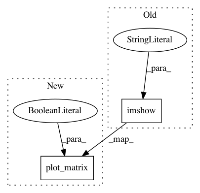

f25d4df0127537d57d4d7f7cd3fa52ca31ffa3ff,examples/03_connectivity/plot_multi_subject_connectome.py,,plot_matrices,#,18
Before Change
// Display covariance matrix
plt.figure()
plt.imshow(cov, interpolation="nearest",
vmin=-1, vmax=1, cmap=plotting.cm.bwr)
plt.colorbar()
plt.title("%s / covariance" % title)
// Display precision matrix
After Change
display.axes.set_title("%s / covariance" % title)
// Display precision matrix
display = plot_matrix(cov, cmap=plotting.cm.bwr,
vmin=-span, vmax=span, colorbar=True)
display.axes.set_title("%s / precision" % title)
////////////////////////////////////////////////////////////////////////////////////////////////////////////////////////////////////////////////////////////
In pattern: SUPERPATTERN
Frequency: 4
Non-data size: 2
Instances
Project Name: nilearn/nilearn
Commit Name: f25d4df0127537d57d4d7f7cd3fa52ca31ffa3ff
Time: 2017-07-28
Author: moritz.boos@uni-oldenburg.de
File Name: examples/03_connectivity/plot_multi_subject_connectome.py
Class Name:
Method Name: plot_matrices
Project Name: nilearn/nilearn
Commit Name: f25d4df0127537d57d4d7f7cd3fa52ca31ffa3ff
Time: 2017-07-28
Author: moritz.boos@uni-oldenburg.de
File Name: examples/03_connectivity/plot_extract_regions_dictlearning_maps.py
Class Name:
Method Name:
Project Name: nilearn/nilearn
Commit Name: f25d4df0127537d57d4d7f7cd3fa52ca31ffa3ff
Time: 2017-07-28
Author: moritz.boos@uni-oldenburg.de
File Name: examples/01_plotting/plot_visualize_megatrawls_netmats.py
Class Name:
Method Name: